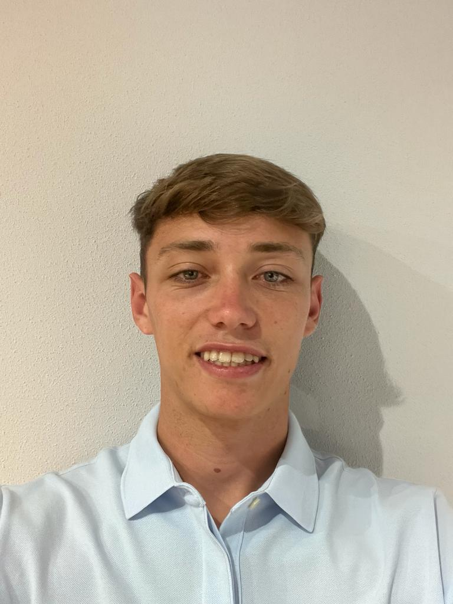

Mi Currículum

Información Personal
- Nombre: Lucca Manfredotti García
-
Dirección: Calle Cullera 14, Arroyomolinos
- Teléfono: 619 003 820
- Email: luccamanfredotti@gmail.com
-
LinkedIn:
linkedin.com/lucca
Experiencia Laboral
-
Socorrista en piscina comunitaria con la empresa Piscinas
Goldenpool
-
Lugar: Piscina comunitaria de Arroyomolinos,
Madrid
- Fecha: Junio 2021 - Septiembre 2021
-
Descripción:
-Vigilancia de una piscina municipal con una afluencia diaria
de 40 personas.
-Control de la calidad del agua.
-Control de la calidad de la piscina.
-Coordinación con los servicios de enfermería en la asistencia
de casos leves.
Habilidades
- Liderazgo
- Trabajador en equipo
- Asertivo
- Aprendizaje rápido